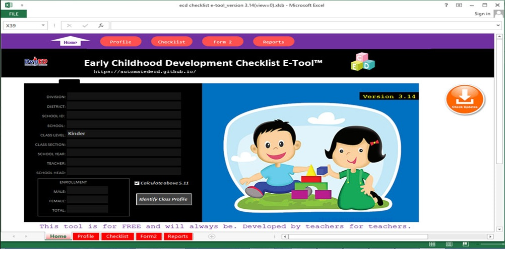

ECD E-Tool Version 3
Early Childhood Development Checklist E-Tool for Kindergarten Teachers
DESCRIPTION
ECD E-TOOL 3 is an automated or an electronic REVISED PHILIPPINE EARLY CHILDHOOD DEVELOPMENT CHECKLIST intended for DepEd kindergarten teachers. ECD E-Tool 3 uses Excel Visual Basic for Applications or Excel VBA a programming language for Excel coding for task automation. This code is embeded in the tool and should not be restricted.You need to enable Excel Macro.
SPECIFICATIONS
- File size: 1.4MB to 2MB
- File type: Microsoft Excel Binary Macro Enabled
- File fomat: xlsb
LICENSE
- Freeware
Price
- PhP 0.00 (Note: All of our files are not for sale. We are sharing it for free.)
TARGET END-USER
- ECD E-TOOL 4 aims to be utilised by any DepED Teachers of the Republic of the Philippines.
SYTEM REQUIREMENTS
- Windows Operating System: Windows 7 to Windows 10
- Windows Operating System with x32 bit or x64bit processing architecture
- At least 2GB of memory (RAM)
- At least 1.5MB of free disk space
- Installed Microsoft Excel 2010 or later(Microsoft Excel 2010, Excel 2013, Excel 2016 or Excel 2019)
INITIAL DATE RELEASED
- April 2, 2019
FEATURES
- There is NO NEED TO TYPE relevant data such as LEARNER'S NAME, DOB, ADDRESS, PARENT'S NAME, because with just few clicks you can simply Import data from SF1 if available. Note: You do NOT NEED to MODIFY or CHANGE anything in your SF1. ECD E-Tool can read your SF1 directly , regardless of class size, and even Excel or any spreadsheet programs are not installed in your computer.
- Data synchronization with LIS data through SF1. You can always sync updated SF1 data to your Checklist as often as you want.
- No need to setup your computer system regional clock settings or format. If your computer or system clock/date setting is not the same with the date formatting of excel template it will result to an erroneous value, and sometimes unnoticed. Unlike other eccd checklist excel templates, ECD E-Tool manages its own date system for calculating ages.
- Can hold more than 100 enrollment
- Single class in a single file.
- It has built-in class level summary report
- Supports 3-time printing result of assessment period in single form
- Results are automatically calculated from calculation of raw score, age, standard score up to the interpretation.
DOCUMENTATION/TUTORIALS
- For instructions, manual or tutorial please click here.
STATUS SUPPORT
- Active
File
| File | Version | Download Size | Download |
|---|---|---|---|
| ECD E-Tool | 3.14 | 1.4MB | Download |